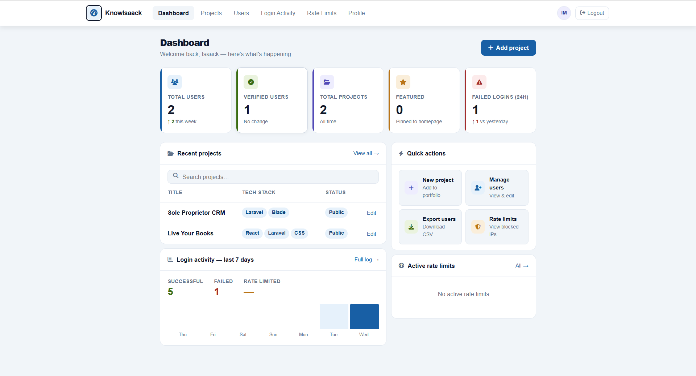
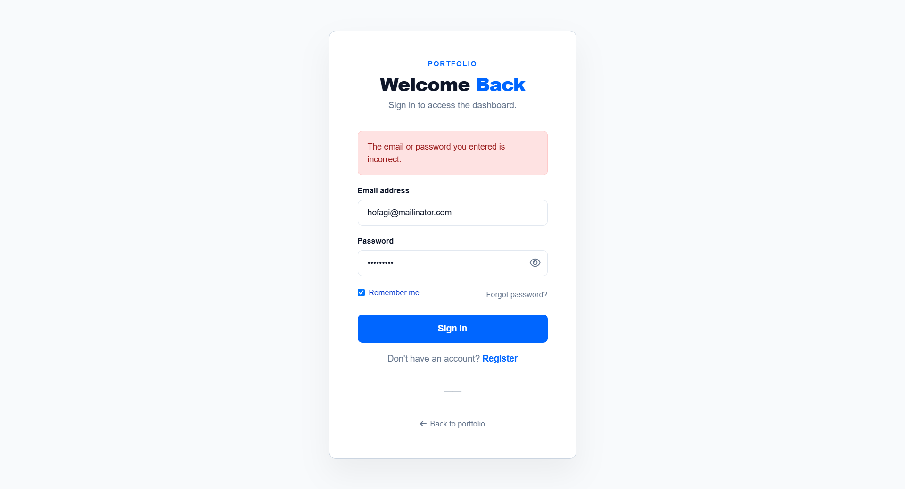
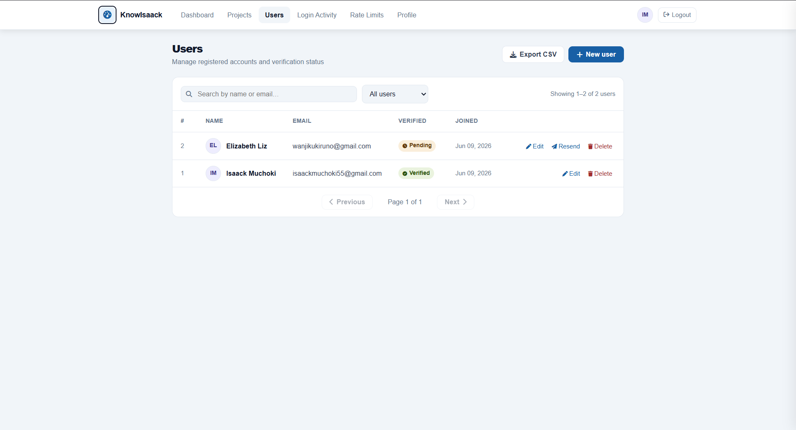
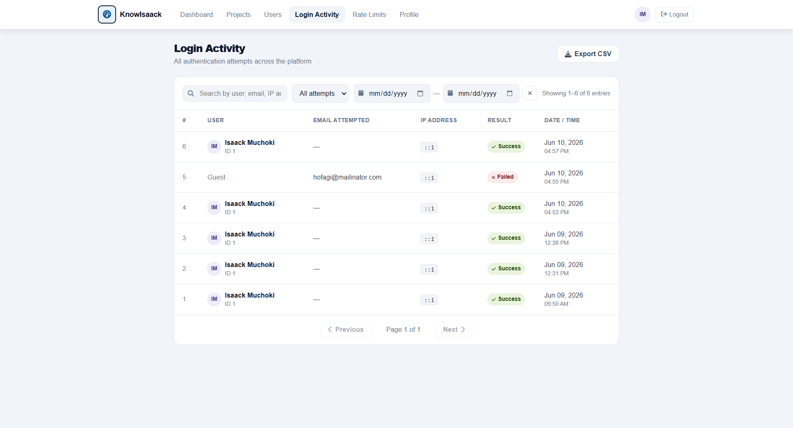
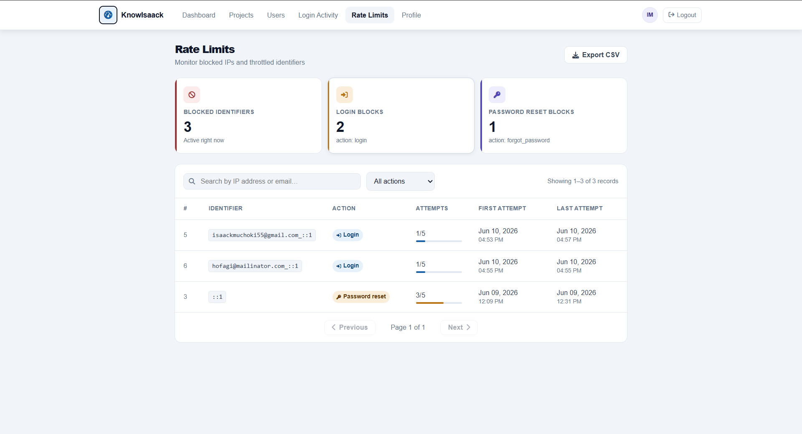
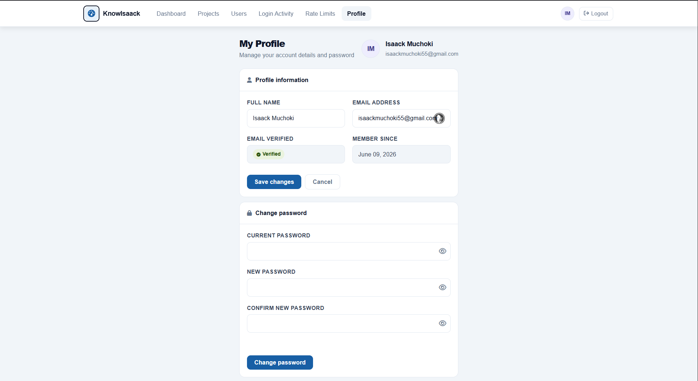
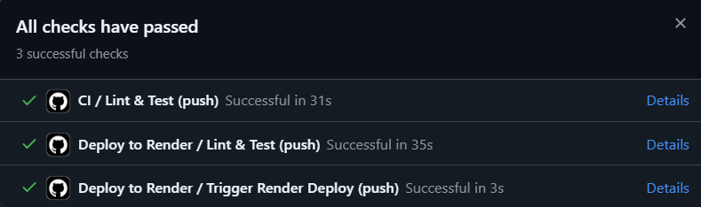

Supabase Migration
Migrated from local MySQL to Supabase PostgreSQL with SSL and connection pooling
A complete portfolio and admin dashboard system with user management, rate limiting, login analytics, and Supabase integration — deployed live at isaack.me.
A complete admin ecosystem with authentication, rate limiting, testing, and CI/CD
Migrated from local MySQL to Supabase PostgreSQL with SSL and connection pooling
PHPUnit unit tests + integration tests with GitHub Actions CI pipeline
Login attempt throttling with automatic reset on successful authentication
Seamless login/registration with persistent form state and password strength meter
Complete admin UI for managing projects, users, and site content
Working contact form that sends emails directly from the portfolio
A full-featured admin dashboard that provides real-time insights into platform usage, user activity, and system health — all accessible through a secure admin interface.

Dashboard Preview
Admin dashboard with real-time metrics

Secure authentication with rate limiting
Implemented a robust authentication system with AJAX for smooth UX, plus intelligent rate limiting that resets after successful login — preventing brute force attacks without frustrating legitimate users.
// Rate Limiting Logic - Resets on Success public function login(Request $request) { if ($this->hasTooManyLoginAttempts($request)) { return $this->sendLockoutResponse($request); } if (Auth::attempt($credentials)) { // Clear rate limit on successful login $this->clearLoginAttempts($request); return redirect()->intended('dashboard'); } // Increment failed attempts $this->incrementLoginAttempts($request); }
User management, login activity, rate limits, and profile management




Implemented comprehensive testing with PHPUnit, including unit tests for core services and integration tests for database operations. GitHub Actions CI ensures tests pass before any deployment.
// Example Integration Test public function test_user_can_login_with_valid_credentials() { $user = User::factory()->create([ 'email' => 'test@example.com', 'password' => bcrypt('password123') ]); $response = $this->post('/login', [ 'email' => 'test@example.com', 'password' => 'password123' ]); $response->assertRedirect('/dashboard'); $this->assertAuthenticatedAs($user); }

Continuous integration pipeline
Real problems I solved during development
Challenge: Moving from local MySQL to Supabase PostgreSQL with existing data
Solution: Updated all config files, added SSL mode, and connection pooling for production
Challenge: Form data disappearing on validation errors
Solution: Implemented persistent form state with JavaScript and server-side re-population
Challenge: Legitimate users getting locked out after failed attempts
Solution: Implemented automatic rate limit reset on successful login
Challenge: Tests failing due to database connection issues in GitHub Actions
Solution: Added PostgreSQL service container and proper environment variables
Designed and migrated the entire database schema to Supabase PostgreSQL, including users, projects, login attempts, rate limits, and contact messages.
The portfolio platform is deployed and running at isaack.me with Supabase backend.
Powered by Supabase PostgreSQL • Deployed on Render